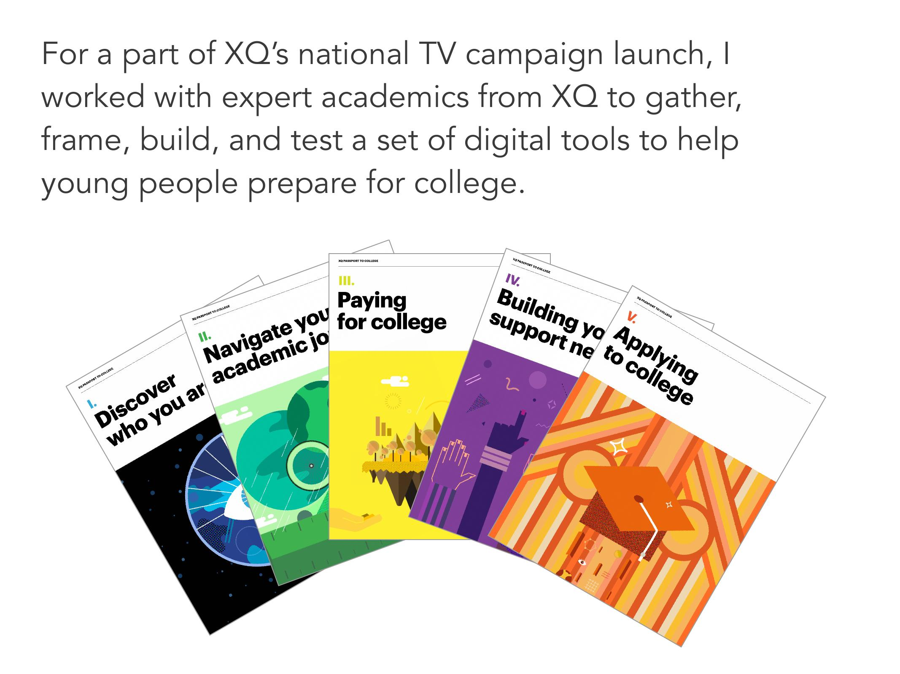
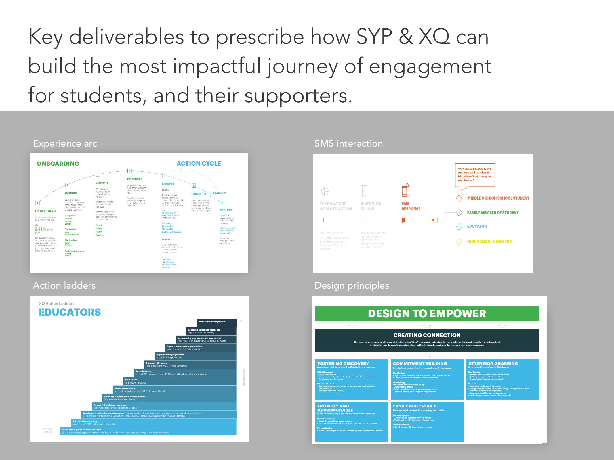
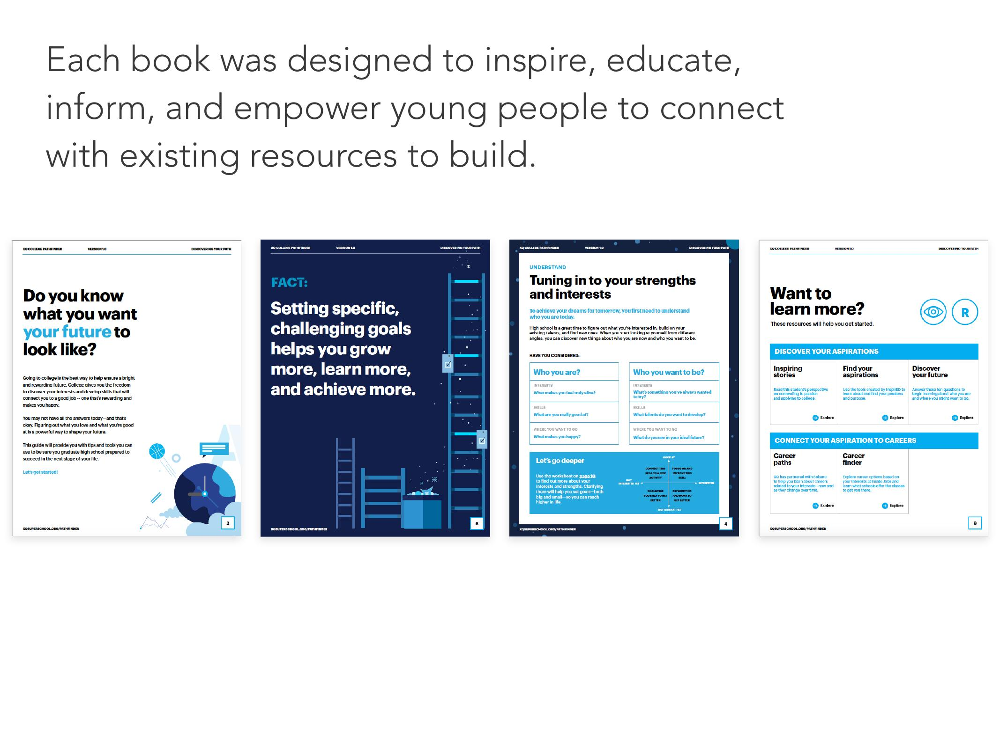

Architecting a national movement to rethink America's high schools
In 2017, XQ aired an hour-long live special on all four major broadcast networks (ABC, NBC, CBS, and FOX) reaching 26 million Americans. I helped design the movement structure, engagement strategy, and digital tools that turned a one-night broadcast into a sustained national conversation about the future of public education.
- 26M viewers reached through live broadcast
- 2x growth in supporters overnight via SMS
- 100K+ members by end of campaign

The Context
The American high school was designed over a century ago for a manufacturing economy. XQ, backed by the Emerson Collective, launched to change that, starting with an open call for educators, parents, and students to design the next model for public education.
By 2017, more than 10,000 people had submitted proposals. XQ's community had grown to 100,000 supporters. The live TV special was meant to be the spark that turned early momentum into a national movement, but a broadcast only lasts an hour. The question was: what happens after the credits roll?
My Role
As a design strategist on SYPartners' team, I led the design of movement structure, engagement systems, and digital tools that would carry the broadcast's energy forward. My work spanned three layers:
- Movement structure: I designed the narrative arc and calls-to-action that converted viewers into participants
- Engagement strategy: I structured the SMS and content funnel that kept people engaged after the broadcast
- Product design: I designed College Pathfinder, a tool to help young people navigate the path from high school to college
Turning Viewers into Participants
26 million people watching a broadcast is a moment. Keeping them engaged is a system. We designed a call-to-action for the live show (text XQLIVE to 225568) that doubled XQ's supporter base overnight. SMS became their most effective channel for content distribution and long-term engagement.
The structure behind that CTA mattered as much as the CTA itself. Using an action ladder framework, we designed segmentation by audience type (student, parent, educator), sequenced content drops, and pathways that moved people from passive interest to actually participating.

College Pathfinder
The broadcast raised awareness. The tools had to deliver value. I designed College Pathfinder, a digital guide to help young people navigate the path from high school to higher education. I led the design and content structure; XQ's education experts provided the research foundation and subject matter expertise.
The guide covered five territories: discovering your strengths, navigating your academic journey, paying for college, building your support network, and applying. Each section balanced inspiration with practical steps, designed to meet students where they were, whether a first-generation college applicant or a junior just starting to think about the future.
Design Principles
We established a framework called "Design to Empower" that guided every decision, from visual tone to information structure:
- Create connection: Let users see themselves in the path described
- Foster discovery: Build curiosity and momentum through the content
- Build commitment: Make the next step obvious and achievable
- Stay accessible: Remove barriers to entry, especially for first-generation students

The College Pathfinder Library
Browse all five guides from the College Pathfinder series. Click any guide to view it inline.
Naming & Positioning
The original working title, "Passport to College," tested poorly. The passport metaphor felt like a transaction, and for immigrant students, it carried unintended weight. Using a design sprint approach, we led a naming sprint grounded in a core insight: 95% of freshmen already want to go to college. The barrier was never motivation. It was complexity, lack of resources, and the absence of mentorship.
We reframed the guide as a mentor or big sibling, someone who demystifies the process rather than sells the destination. The naming criteria that emerged:
- Connect to future self: Help students see who they could become
- Signal support: You are not alone in this
- Balance tactical and hopeful: Steps you can take today, journey you can imagine tomorrow
We presented four alternatives to leadership, each pressure-tested against competitive landscape (BigFuture, College Board) and tone. The final name, College Pathfinder, landed on the balance we were looking for: grounded enough to be useful, forward-looking enough to inspire.
Impact
The numbers tell part of the story:
- 26 million Americans reached through the live broadcast
- 2x growth in XQ's supporter base overnight via SMS
- 100,000+ community members by end of campaign
- Thousands of College Pathfinder downloads in the first week
The larger impact was structural: SMS became XQ's most effective engagement channel, and the movement structure we designed gave them a repeatable system for turning moments into ongoing engagement.
What I Learned
Movement design taught me that reach is not the same as engagement. 26 million viewers meant nothing without converting attention into action. The action ladder (text a number, receive content, join a community, host a viewing party) was the real product. The broadcast was just the trigger.
The naming work taught me something else: language carries weight you may not see. "Passport" felt neutral to us. To first-generation and immigrant students, it carried the weight of documents, barriers, access denied. The best naming is careful, not clever.
Along Mentoring Tool
Designing a relationship-building tool that helps teachers and students connect through structured reflection prompts.
Chan Zuckerberg Initiative
Designing digital tools to help empower teachers, school leaders, and young people with data and educational experiences.
Mediation Response Unit
Designing a national toolkit to help communities respond to conflict with mediation instead of police.
Interpublic Group
Bringing collective intelligence to executive decision-making at a global advertising holding company operating in over 130 countries.